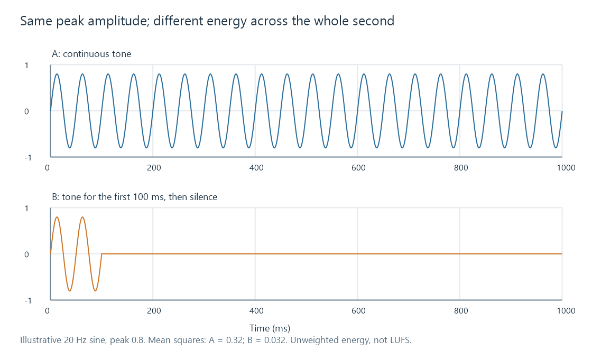

Audio loudness
Two tracks can reach the same highest sample value and still make you reach for the volume control when one follows the other. One may spend much of its time near that level; the other may contain a few high transients surrounded by quieter music. Peak level tells you about the largest excursion. Loudness concerns how strong the sound is perceived over time.
That distinction matters for an Emby music library containing albums from different mastering eras, and for a television programme followed by a trailer. Raising everything to the same peak does not necessarily make those transitions comfortable.
An equal-peak experiment
Consider two idealized signals measured over one second. Both contain a sine wave with peak amplitude 0.8 relative to digital full scale. Signal A continues throughout the second. Signal B contains the same sine for one tenth of the second and silence for the rest.

For a sine, the mean squared amplitude is half the squared peak. A therefore has mean square 0.8²/2 = 0.32. B has one tenth of that energy per unit time, 0.032. Their root mean square (RMS) amplitudes are about 0.566 and 0.179. The energy ratio is ten to one, a 10 dB difference, despite identical peaks.
This is an unweighted energy example, not a LUFS result. A programme loudness meter adds frequency weighting and, for integrated loudness, gating. In particular, excluding sufficiently quiet blocks can change the result for an intermittent signal. The experiment explains why the highest sample alone cannot describe the whole signal.
Music adds further variables. A sustained bass note, a short snare hit, and bright speech distribute energy differently across frequency and time. Human hearing does not assign equal perceptual importance to every frequency. A useful programme measurement therefore needs a defined method rather than just a visual impression of waveform height.
The measurements answer different questions
| Measurement | What it helps establish |
|---|---|
| Sample peak, in dBFS | The highest stored sample magnitude relative to full scale |
| True peak, in dBTP | An estimate of the highest reconstructed waveform magnitude, including between samples |
| RMS level | Average signal energy over a specified interval, with any weighting stated |
| Integrated loudness, in LUFS | A standardized, weighted and gated programme measurement |
| Momentary or short-term loudness | How loudness varies over a much shorter window |
| Dynamic range | The programme's level variation, or a device's usable range, depending on context |
A true-peak limit addresses available headroom. An integrated loudness target addresses matching programme levels. Neither replaces the other. A recording can have a low average level yet contain a transient that already leaves very little room for additional gain.
The target also belongs to a particular workflow. EBU R 128 uses −23 LUFS for programme normalization in its broadcast recommendation. That is a reference for that use, not an instruction that every player or every personal music collection must use the same level.
From the numbers to the room
A digital measurement is referenced to the signal's full scale. Acoustic sound pressure depends on the complete reproduction chain: digital and analog gain, the DAC's output voltage, the amplifier, speaker sensitivity, listening distance, and the room.
Consequently, a file measuring −23 LUFS does not specify how many decibels SPL reach your seat. Changing the volume control changes that physical result without changing the stored file's measured loudness. A gain of −6.02 dB approximately halves signal amplitude; it does not mean that every listener will describe the sound as exactly half as loud.
Loudness normalization uses a programme measurement to choose a gain adjustment. Dynamic range compression changes gain during the programme. Keeping those operations separate makes it easier to decide whether the problem is a jump between tracks or the difficulty of hearing quiet dialogue within one movie.